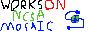

sike pona
next →
sike pona
next →
tenpo kama la mi pali e lipu sin. lipu pi(pini ala) li lon ni. ona li toki [insa,, li,,] taso
o kama pona a. ni li lipu wawa mi. mi musi a a a.
lipu pi( toki ilo Python 2) toki [insa,, li,,] taso -- sina wile pali e ilo epiku pi(toki ilo Python 2) la o lukin e ni.
ilo alasa pi( akesi musi) -- ilo majuna la ni li epiku.
lipu pi( jan [kalama,, wile,,]) -- lipu pi jan pona mi.
tenpo sike nanpa (luka luka luka tu tu ali mute) la lipu pi(esun Apple) -- lipu majuna pi(esun Apple).
tenpo sike nanpa(mute ali mute) la sitelen mi -- lipu wawa a
